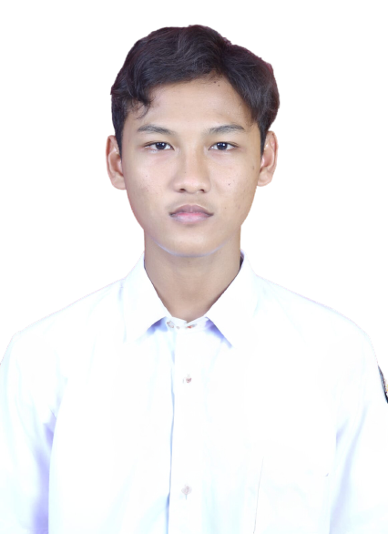

Bachelor's of Development Economics with strong analytical, leadership, and project management capabilities. Experienced in leading cross-functional teams, managing data-driven projects, and conducting applied economic research using large-scale datasets (SAKERNAS).

I'm an Economics graduate from Brawijaya University with hands-on experience in SQL, Python, Stata, and BI tools including Power BI, Looker Studio, and Tableau. My thesis explored digital technology adoption and its impact on worker income — a topic at the intersection of labor economics and technology.
I've worked on end-to-end data projects — from cleaning large-scale microdata (SAKERNAS) to building interactive dashboards that drive strategic decisions. I'm driven by the challenge of turning messy datasets into clear, actionable insights that create real business impact.
Currently targeting Data Analyst, Consulting, and Management Trainee roles where I can apply my analytical skills and cross-functional leadership experience to solve complex problems.
International research collaboration between Universitas Brawijaya and Universiti Putra Malaysia (UPM). Conducted large-scale empirical analysis using Indonesia's national labor force microdata (SAKERNAS) to examine income disparities in the industrial sector.
Analyzed $2.29M in sales data to evaluate business performance, profitability, and operational efficiency. Developed an interactive dashboard tracking KPIs and delivering strategic recommendations.
Capstone project at Bangkit Academy (Google, GoTo, Traveloka). Led a cross-functional team of 6 members (ML, Cloud, Mobile) to deliver a full Android application within tight deadlines.
Founded and built a career platform from concept to MVP, helping students and fresh graduates navigate the recruitment landscape. Features include interview preparation tools, resume building, CV advisory, and job discovery — all powered by modern web technology and AI.